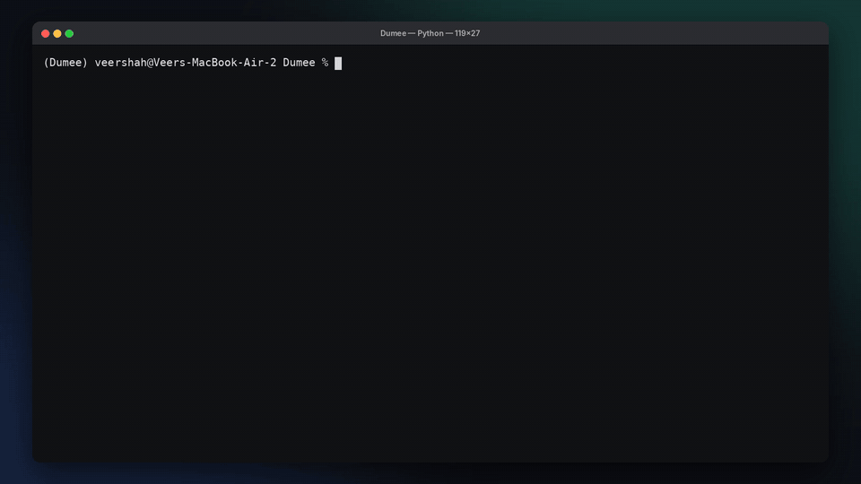
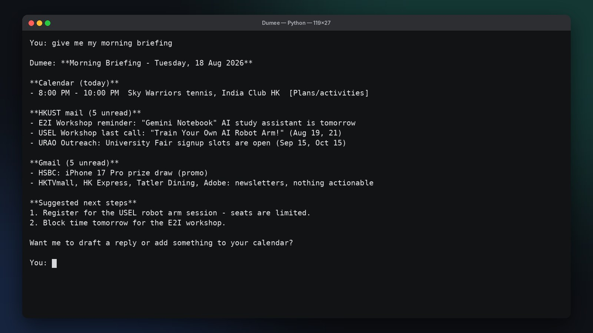

Personal project · Voice AI agent
DUMEE Personal AI Agent
A locally running voice AI agent that works as an executive assistant for a university student. It reads and writes the calendar, HKUST mail and Gmail, and safety is enforced in code, not left to the model.

Demo

A short run of the voice agent giving the morning briefing and handling one confirmed action.
Why I built it
I wanted to improve my software skills, learn AI frameworks, and learn how to build code that is production ready, using Claude to help. The first thing I built was an agent for my own daily routine.
Every morning it gathers my calendar, HKUST mail and Gmail in one parallel call and gives me a single briefing. It saves me about 2 hours of repetitive work a week.
How it works

A real morning briefing, as it appears in the terminal.
Tech stack
AI concepts
DUMEE uses no agent framework such as LangChain. I built the loop by hand on the OpenAI-compatible tool-calling spec, so every behaviour is understood, logged and testable.
Tools it can call
Calendar · 5
- calendar_get_today
- calendar_get_range
- calendar_compose_event
- calendar_create_event gated
- calendar_delete_event gated
HKUST mail · 5
- mail_get_unread
- mail_get_content
- mail_create_draft
- mail_send_email gated
- mail_reply gated if send
Gmail · 6
- gmail_list_unread
- gmail_search
- gmail_get_body
- gmail_create_draft
- gmail_send_email gated
- gmail_reply gated if send
Briefing · 1
- get_morning_briefing
Key code
The model can request a destructive tool, but only a typed "y" from me runs it, and only this gate can set confirm=True. Safety lives in Python, not in the prompt.
What failed
- Google OAuth on campus wifi. TLS interception beat env vars, truststore and a monkey-patch. The fix was setting verify on the OAuth flow's own session.
- AppleScript calendar reads. JXA, filter variations, concurrency caps and a background cache all failed, at roughly 22 ms per event.
- icalBuddy returned no calendars, because EventKit needs its own permission grant.
- Free-tier model limits: 429 errors and a daily request cap.
- The Gmail refresh token expired after about 7 days.
What worked
- EventKit in-process for reads and deletes, with AppleScript kept as a fallback behind a circuit breaker.
- Injection-safe AppleScript: titles and email bodies are passed as arguments, never spliced into script text.
- Safety in code: the confirmation gate, mail that defaults to a draft, a dry-run compose step, and exact-title deletes that skip recurring events.
- Honest failure: a timeout on a delete means outcome unknown, and is checked against EventKit.
- Resilience: retry with jitter, history compaction, a loop cap, and graceful tool loss (17 tools, or 11 if Gmail is down).
Results
78.46 s to 0.025 s
45.02 s timeout to 0.16 s
(the one failure is an expired token)
(my estimate)
Speeds are from my own test run on 26 August 2026. The time saved is an estimate from my email volume (about 25 emails a day, 4 real replies), not a measurement.
Status and next steps
The backend and the voice feature are working. A visual interface is planned next.
- Add a tool to edit existing events, and a pinned model with reliable tool calling and streamed replies.
- Extract tasks from mail threads and brief me proactively.
- Replace the disabled TLS check with the real campus root certificate.